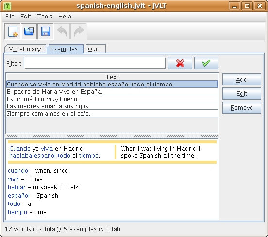
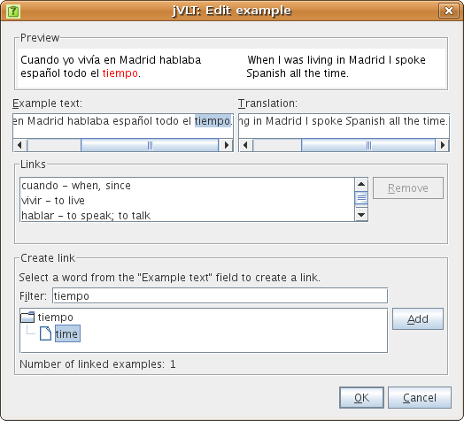

jVLT - a vocabulary learning tool
Examples

Adding examples
There are two basic steps to perform when creating a new example:- Enter the example text and (optionally) a translation,
- create the links to your vocabulary words.
In order to create a link to a word, you first have to select the text portion of the example text which you want to link to a word. This string is automatically entered in the "Filter" text field in the "Create link" section of the dialog. You can edit the string if the selected string is not suitable. For example, if you have an example containing the string "made" which you want to link to the word "to make", then you will have to change the automatically entered string "made" into "to make" or some substring of it.
After the filter is applied you get a list of matching words. Each word item contains a list of subitems which stand for the meanings of the word. In order to create a link you have to select one of the meanings of one of the words and press the "Add" button. If you want to remove a link, select it from the list below the "Translation" text field and click "Remove".
